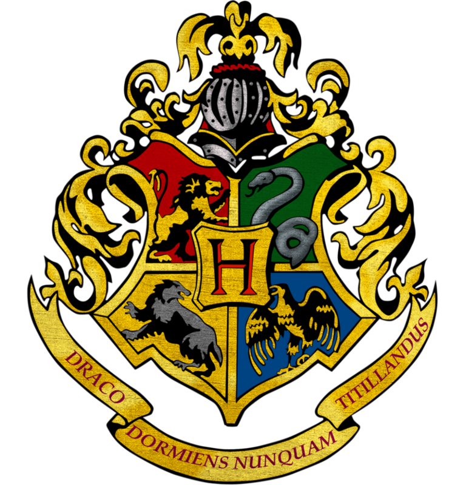
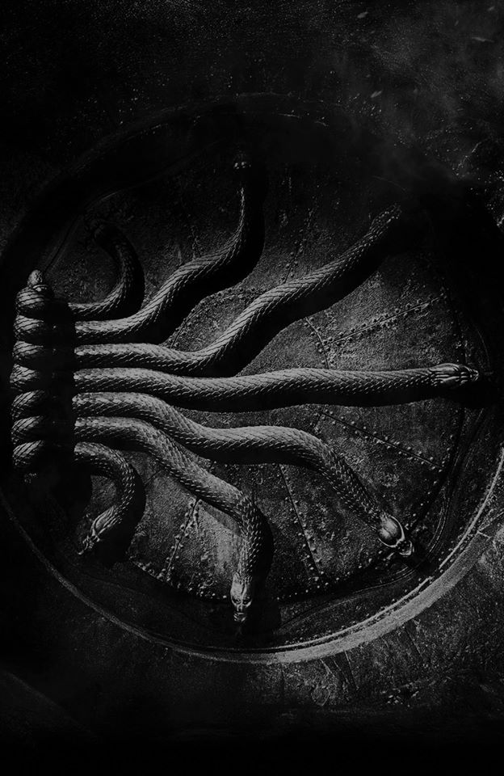
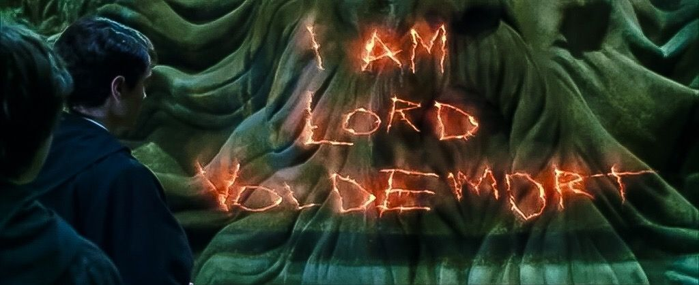

-
Mon enfance
J'ai découvert l'histoire de ma famille pendant mes études. Né orphelin d'une mère sorcière et d'un père moldu le 31 décembre 1929, j'ai passé les onze premières années de ma vie à l'orphelinat Wool. Je me sentais déjà très différent des autres enfants ; jusqu’au jour où Dumbledore est venu me chercher pour entrer à Poudlard. Il me révèle alors que je suis un sorcier.

-
Ma scolarité à Poudlard
Je ne savais pas, à cette époque, que ma place était réservée depuis ma naissance, car je suis le descendant d’un des fondateurs de l’école : Salazar Serpentard. J’étais un élève studieux, consciencieux et doté d'un grand talent : ce sont ces qualités qui m’ont permises de valider mes BUSES & ASPIC. Les connaissances du professeur Slughorn et ma curiosité m'ont ouvert les portes d'une magie qui allait être pour moi une façon de vaincre la mort : les horcruxes.
 -
Défendre les valeurs de ma famille
Afin d’être digne de l'héritage de ma famille et de maintenir la grandeur de Poudlard, je me suis promis de traquer tous les sang-de-bourg qui ne méritent pas d’étudier la magie. C’est grâce à mes talents de Fourchelang que j'ai pu ouvrir la chambre des secrets ; une pièce cachée par mon ancêtre Salazar dans laquelle se terre le Basilic, un serpent géant au pouvoir destructeur. Ma quête de purification commença par la mort de Myrtle Elizabeth Warren, une insupportable moldue insignifiante. Je dûs ruser pour faire accuser un autre : cet abrutit d'Hagrid. Il me fallait également faire disparaître ceux qui avaient déshonnoré mon sang, la famille Jedusor ne pouvait pas être. J'entrepris donc de tuer mon géniteur ainsi que son père et m'arrangea pour faire porter le châpeau à mon oncle, qui fût alors banni à Azkaban.
 -
Lord Voldemort
Après avoir tué mon père, je ne pouvais garder son nom infâme. Il m'en fallait un qui montre ma grandeur, mon talent et qu'il inspire une telle terreur que plus personne n'osera le prononcer à haute voix. Je décidais donc d’en faire un anagramme : « Tom Elvis Jedusor » devenait alors « Je suis Voldemort ». Aujourd'hui, la pluspart des sorciers m'appelle "Vous savez qui".
 -
Mon parcours après l'école
Je souhaitais devenir professeur de défense contre les forces du mal, mais ma candidature fût refusée une première fois en raison de mon jeune âge. Je dûs donc dans un premier temps travailler chez Barjow et Beurk. Mon charme naturel fit de moi un vendeur talentueux. J'ai la capacité de briller dans tout ce que j'entreprends. Lorsque Dumbledore devint directeur de Poudlard à son tour, je fis une nouvelle candidature, toujours pour le même poste. Cet affront engendra une haine en moi, je disparus quelques temps afin de commencer à regrouper une troupe de sorcier qui serait mon armée personnelle : les mangemorts.

" J’ai toujours eu un talent particulier, j’ai toujours été spécial. "